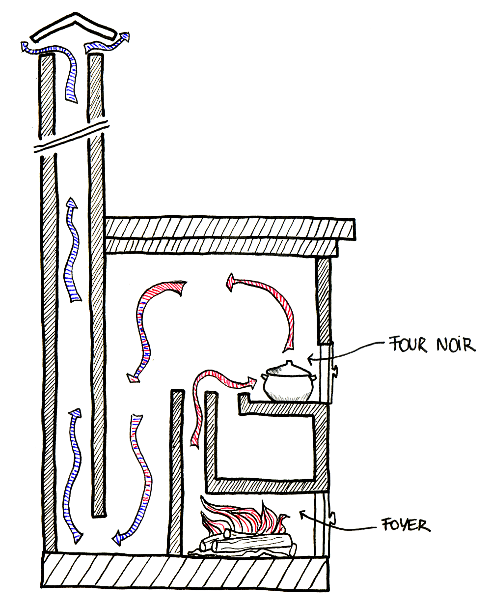

Le principe des cloches et leur utilisation avec les Batchrockets ou les Batchblocks
Introduction
Les poêles de masse sont composés d'un coeur de chauffe dont le but est de brûler le bois le plus efficacement possible, et d'un système de récupération de la chaleur dont le but est de transmettre la chaleur des fumées à la masse.
Schéma des deux parties principales d'un poêle de masse. Schéma réalisé par G. Stephens, association UZUME.
Dans notre cas le système de récupération de la chaleur est une cloche et cet article explique son fonctionnement.
Le principe
Il y a environ 3300 ans, sous la dynastie Shang, les chinois inventèrent le "four dragon" basé sur le principe des cloches. C'est ce même principe que nous réutilisons dans nos poêles de masse pour extraire la chaleur des fumées issues de la combustion du bois.


En haut, Schéma d'un four "dragon" de potier chinois fonctionnant sous le principe des cloches;À gauche, photo d'un four dragon réalisé au Japon avec des cloches en série; à droite, schéma d'un four à briques en simple cloche.Sources : The Self-Reliant Potter: Refractories and Kilns, Henrik Norsker, 1987, p. 58 et 50. et wikimedia.org
Le principe des cloches se conçoit par analogie avec l'eau : dans un lac, l'eau coule très lentement. Ceci lui laisse le temps de se stratifier par couche de température. L'eau la plus froide est en bas, donc si avec un tuyau on pompait l'eau du fond du lac, on obtiendrait l'eau la plus froide.
A contrario, dans un torrent le débit est plus rapide et le chemin plus tortueux : tout se mélange et on ne peut extraire qu'une eau à une température moyenne.
L'idée des cloches est de faire entrer les gaz rapides et turbulents issus du coeur de chauffe (l'eau du torrent) dans un grand espace (le lac) de sorte que les gaz ralentissent suffisamment pour qu'ils se stratifient naturellement par couche de température : les gaz chauds en haut et les gaz froids en bas.
Ainsi, en créant une ouverture tout en bas de la cloche, on récupère toujours les gaz les plus froids. Ce sont des gaz d'évacuation qui seront éjectés par la cheminée.

À gauche, schéma d'un poêle de masse à chicanes. À droite, schéma d'un poêle de masse utilisant le principe des cloches. Schéma réalisé par G. Stephens, association UZUME.
Une autre manière d'appréhender le système des cloches :
- Au contact des briques, les gaz donnent leur chaleur et se refroidissent.
- À cause de la stratification, plus les gaz se refroidissent, plus ils descendent dans la cloche.
- Lorsqu'ils sont suffisamment froids, ils atteignent le niveau de la sortie situé en bas de la cloche.
- La cheminée d'évacuation les éjecte ensuite vers l'extérieur de la maison.
Ainsi, plus les gaz sont en contact avec une surface importante de briques, plus ils seront froids en sortie. On peut soit avoir toute cette surface dans une unique cloche, soit dans une série de petites cloches comme pour le four "dragon". Dans nos poêles, nous utilisons surtout une cloche accolée en série à un banc de chauffe qui est lui même une cloche.
Les avantages des cloches
Le système des cloches provient des fours à briques. Il y a été très utilisé pour une raison précise : dans une cloche, les gaz descendent vers la sortie en empruntant tous les chemins possibles de manière uniforme. Les températures sont donc uniformes par couche de niveau dans une cloche. La partie haute de la cloche est toujours la plus chaude et plus on descend, plus la température diminue.

Schéma de circulation des gaz dans des canaux ascendants ou descendants. Source : The Rational Construction of Furnaces, W.E. Groume-Grimailo, Petrograd, Russia, 1911, p. 91.
Dans les poêles de masse, l'utilisation du système des cloches permet :
- D'éviter les "points chauds". La température est uniforme par couche de niveau donc la maçonnerie est moins sollicitée.
- De diminuer les frottements qui ralentissent les gaz et obligent à utiliser des cheminées avec un fort tirage.
- Une grande variété de formes possibles, ce qui est un plus pour les rénovations et qui nous permet de faire des bancs de chauffe.
- L'intérieur des cloches est un grand espace vide excellent pour y placer un four.
Voici quelques magnifiques poêles construits par Eduardo Marquina utilisants le principe des cloches ainsi que beaucoup d'imagination dans la réalisation des formes :


{kind=link}
{kind=link}
{kind=link}
{kind=link}
Poêles de masse conçus et construits par Eduardo Marquina et utiliants des cloches. Source : Eduardo Marquina, estufas de inercia
Four blanc ? Four noir ?
Les poêles de masse sont aussi des outils de cuisson très pratiques. Le four est chaud pendant toute la saison de chauffe. Pendant ou juste après une flambée le four est à sa température maximale. Ensuite la température du four diminue graduellement jusqu'à la prochaine flambée. On ne règle pas la température du four : on attend que le four ait la bonne température pour y enfourner le plat.
- 
À gauche, schéma d'un poêle de masse équipé d'un four blanc. À droite, le même poêle mais avec un four noir. Schéma réalisé par G. Stephens, association UZUME.
Dans un poêle de masse, deux types de four sont possibles :
- Dans un four noir les gaz chauds sont en contact direct avec les plats de cuisson (ou les pizzas, pains, etc..). Le four devient "noir" parce que les suies (du carbone) s'y déposent. Les températures maximales atteintes sont de l'ordre de 500°C.
- Dans un four blanc les gaz sont en contact avec les parois externes du four. La partie intérieure du four reste toujours "blanche" parce qu'aucune suie ne s'y dépose. Les températures maximales atteintes sont de l'ordre de 250°C.
Vidéo d'un four noir pendant la flambée. Ça en jette.
Le dimensionnement des cloches
Vidéo explicative sur le dimensionnement des cloches.
Plus les gaz chauds libérés par la combustion du bois entrent en contact avec des surfaces froides, plus ces gaz vont être refroidis. La chaleur intense des gaz est captée, absorbée par les parois du poêle qui rediffuseront cette chaleur doucement et sur une longue période de temps.
L'objectif est que les gaz sortent de la cheminée d'évacuation à une température d'environ 150°C en moyenne. Pour information, la température de sortie des gaz dans les cheminées industrielles est plutôt aux alentours de 140°C.
Parfois, la course aux rendements nous entraîne à essayer de grappiller toutes les calories possibles. Néanmoins, un poêle à 80% de rendement total qui fonctionne vaut mille fois un poêle à 90% de rendement total qui refoule une fois sur deux.
Par expérimentation, on a trouvé un lien de proportionnalité entre les surfaces internes du poêle qui sont "absorbantes" et la puissance des coeurs de chauffe.
Calcul de la SIA
La SIA signifie Surface Interne Absorbante. Elle traduit le fait que toutes les parois internes du poêle n'absorbent pas la chaleur. Ainsi, dans la SIA d'un poêle en cloche, on ne compte pas :
- Les parois isolées par l'intérieur ou constituées d'un matériau isolant;
- Les parties basses des conduites de fumées.
-
Les parois internes faites d'un matériau non-isolant avec lesquelles les fumées sont en contact pendant leur descente (la sortie des gaz est systématiquement en partie basse) vers la base de la cheminée d'évacuation;
-
Cas particulier : on compte pour moitié les parois de la cheminée d'évacuation si elle n'est pas faite d'un matériau isolant.
En effet, les gaz montent dans la cheminée d'évacuation (car la sortie des gaz est ici en partie haute) ce qui fait qu'ils n'échangent pas leur chaleur aussi bien que s'ils descendaient.
Les règles de construction des cloches
En pratique, quatres règles de base permettent de construire des cloches. Ces règles sont valables pour les Batchrockets comme pour les Batchblocks :
- À chaque taille de Batchrocket/Batchblock correspond une certaine surface de cloche qu'il faut respecter pour que les gaz sortent à la bonne température.
C'est la SIA du paragraphe précédent. Pour un Batchrocket/Batchblock donné, plus la SIA est importante, plus les gaz vont sortir froids. Mieux vaut sortir trop chaud que trop froid !
- La première surface que voient les gaz en sortant du turbuleur (quasi-systématiquement la face interne du sommet du poêle) doit mesurer au moins 5 fois la section de la cheminée interne et doit être au moins 30 cm au dessus de la sortie de la cheminée interne.
Par exemple, pour un Batchrocket/Batchblock dont le turbuleur mesure 200 mm de côté, la section du système vaut 31400 mm2 donc la surface du sommet du poêle, coté intérieur, doit faire au moins 5 x 31400 mm2 = 157000 mm2. Cela correspond à un carré d'environ 400 mm x 400 mm.
- Quand les gaz vont tout droit, la section de la conduite doit être supérieure ou égale à la section du système.
La seule exception se produit dans les parties du poêle où les gaz sont dans une conduite verticale ascendante. Dans ce cas la section de la conduite peut être inférieure à la section du système.
- À chaque fois que les gaz changent de direction, la section de la conduite doit être supérieure ou égale à 1,5 ou 2 fois la section du système. Minimum 1,5 fois dans les tournants à 90° et minimum 2 fois dans les tournants à 180°. Ces changements de direction se retrouvent à la base de la cheminée d'évacuation, à chaque changement de cloche et dans les bancs de chauffe.
Pour le reste, les formes n'ont quasiment pas d'importance vis-à-vis des cloches.
Le rendement des accumulateurs
Une cloche est un accumulateur de chaleur. Son objectif est d'extraire la chaleur des fumées et de la restituer doucement par la suite.
Pour ceux qui ont déjà construit leur poêle et qui veulent connaitre son rendement, voici un graphique faisant le lien entre la température moyenne des gaz dans la cheminée d'évacuation et le rendement d'extraction de l'accumulateur.
Attention, ce graphique n'est valable que pour une flambée vive sur un Batchrocket/Batchblock ! Pour un poêle en fonte par exemple, les rendements doivent être sous-estimés.
Les hypothèses de calcul de ce graphique sont les suivantes :
- Qualité de la combustion : 500 ppm de CO moyen
- Excès d'air : 13 % d’O2 moyen (flambée vive)
- On ne tient pas compte de l'énergie latente de vaporisation de l'eau (rendement PCI)
- Basé sur la méthode CONDAR de la MHA
En bas, la température moyenne des fumées dans la cheminée. En vertical, le rendement d'extraction correspondant. Source : UZUME
Par exemple, un poêle Batchrocket/Batchblock dont les gaz sortent à 150°C en moyenne a un rendement d'extraction de 89%.
Le rendement global du poêle est donné par la formule :
Rendement total = rendement d'extraction x rendement de combustion.
Le rendement de combustion d'un Batchrocket/Batchblock sur une flambée vive est de 98%. Dans notre exemple, le rendement total est donc de 89 x 0,98 = 87%.
Les autres systèmes
Un système très classique en Europe de l'Ouest est de faire passer les gaz dans une série de chicanes empilées les unes sur les autres. Il existe en fait beaucoup de variété dans les différents systèmes de récupération de la chaleur.
Ces systèmes ont même été réutilisés pour augmenter le rendement des poêles en fonte. L'objectif est toujours le même : faire que les gaz issus de la combustion entrent en contact avec une certaine surface de briques ou de métal pour que les gaz sortent de la cheminée à une température d'environ 100°C.

Schémas de poêles en fonte Norvégiens des années 1800. Source : The Book of Masonry Stoves, David Lyle, 1984, p. 53.